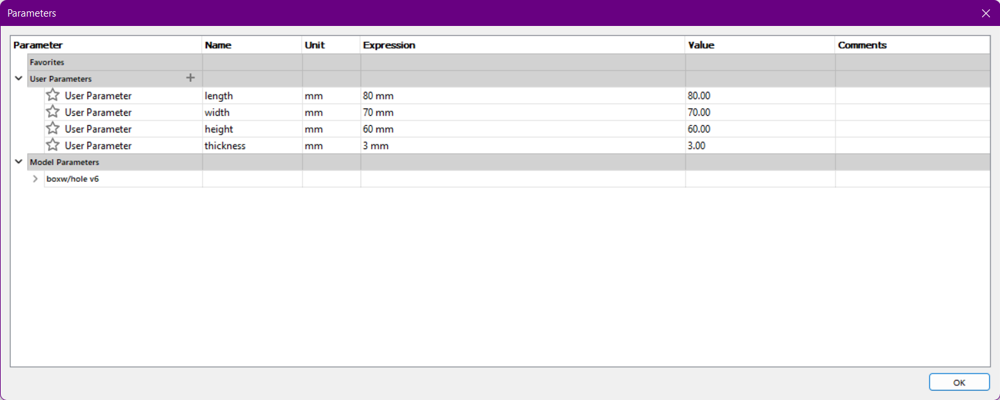
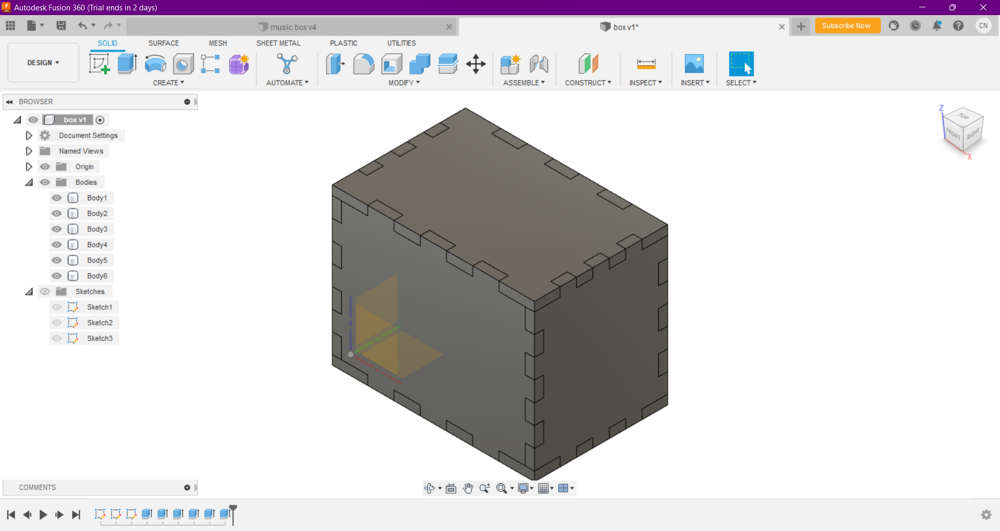
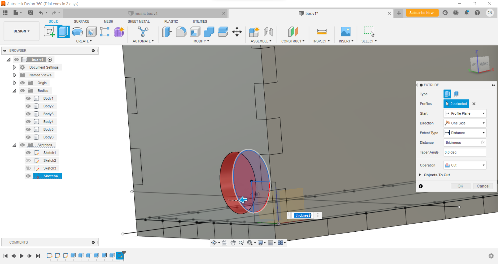

Music box
Using Fusion 360, I designed and laser cut a music box.
Here is the design in Fusion 360.
Design Steps:
Draw 3 of the sides.
The parameters used are:
Draw out a rectangle according to the parameters. Draw an offset by adding rectangles as width/5 by thickness. Use the rectangle pattern function to draw the slots in the offset.
Mirror the lines on the other side of the rectangle.

Repeat this for the other side and the rest of the 3 sides on the origin.
Extrude the sides
Select the rectangle and alterating slots.

Ensure the extrsion is below the drawing.
Repeat the extrusion with the offset of the parameter (width or length or height) to get the other side.
Do this multiple times to get the other sides.

You should get a box like this.
Opening Mechanism
I used a knife hinge
The first step is to cut out this shape from the front side.
A rectangular rectangle was extruded on the front panel. Make sure this is a "new body".
The mechanism should look like this: two circles- one to fit in the knotch on the front side and another to stop it from slipping- and one suare pege to hold them all together. Make sure they are all "new body".
Here it is with the front panel:
Hole for crank
Measure the size of the mechenism and draw the circle.
Extrude the circle and extrude(cut) in the side.
Save dxf files
Select sides and create sketches from them. To save these are dxf files, select each sketch and right click them and click "save as dxf".
Laser Cut
Send these dxf files to the laser cutter. Place them together into one page to save materials and cut.

Put it together
Hot glue the musical mechanism to the bottom and assemble the box.

Tip
Make sure the initial sketches are on the origin so that when the parameters are changed (namely thickness), they are changed professional.